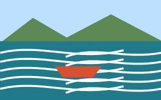
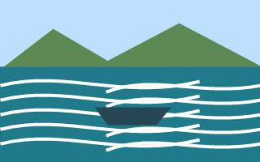

Our mission is to help families, friends, and explorers experience the power of the river with confidence. Nile Rush Rafting combines trained guides, careful planning, and a love for adventure to create memorable white water journeys.

Nile Rush Rafting
History
Nile Rush Rafting began with a small group of river guides who believed that adventure should be exciting, safe, and welcoming. Their first trips followed familiar bends of the Nile and focused on careful training, strong teamwork, and respect for the river.

Over the years, the company has grown into a trusted rafting team serving visitors who want to discover Uganda's beautiful rivers. Today, every trip is planned to balance excitement, safety, and unforgettable views from the water.
Adventure Awaits You!


